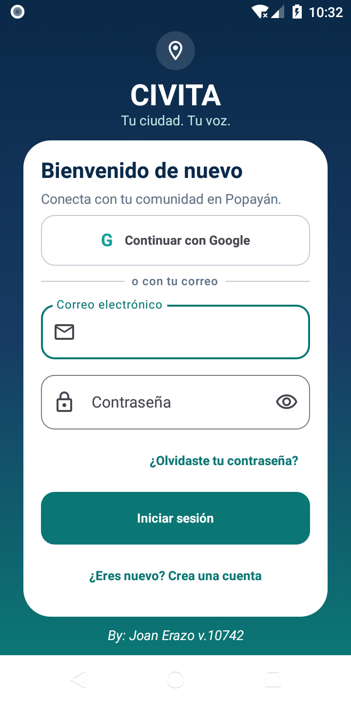
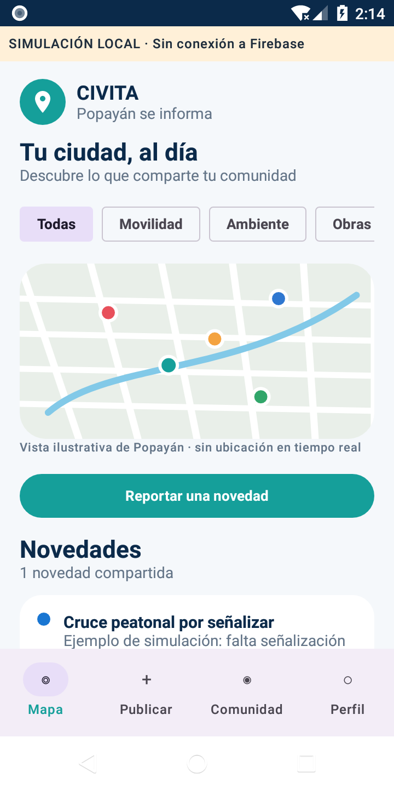
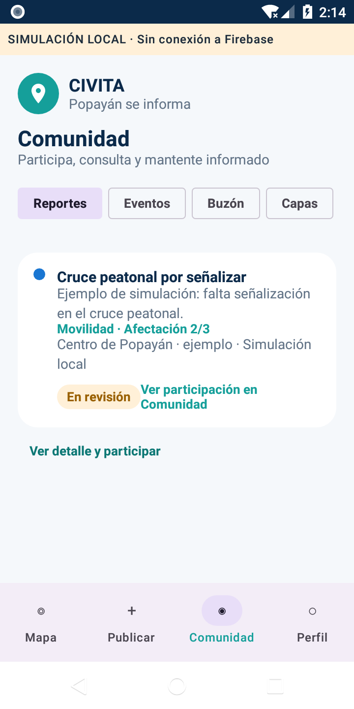
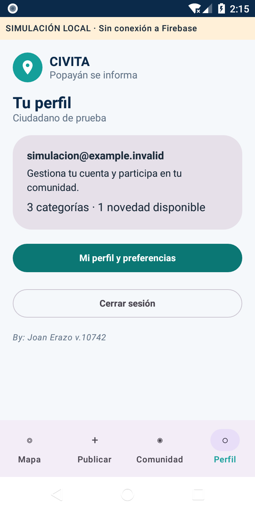

Capturas nativas. Las vistas de simulación usan ejemplos locales y no acreditan conexión a Firebase. La captura de acceso corresponde a la pantalla de autenticación conservada; no demuestra un inicio de sesión.



